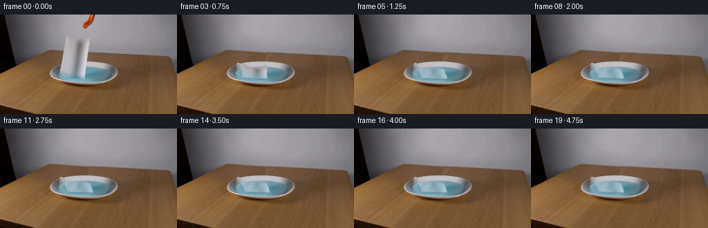
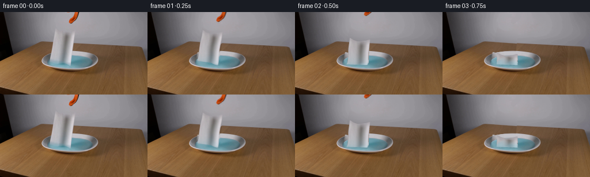
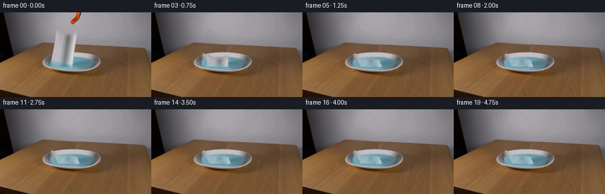

CODING AGENTS AS PIXEL WORLD MODELS
traex/GPT-6.1-Sol · 0129
点击播放 · 原生 RGB 像素
逐轮保存的候选
回放视频、检查图与代码变化。
每份候选均可单独播放。实际图片检查记录在下方工具轨迹中。
候选 01播放与检查图
点击播放 · 原生 RGB 像素


展开代码变化
--- 上一保存版本
+++ 本次保存版本
@@ -0,0 +1,235 @@
+from pathlib import Path
+import numpy as np
+from PIL import Image, ImageDraw
+import cv2
+from scipy.ndimage import gaussian_filter, map_coordinates
+import artifact_io
+
+ROOT=Path(__file__).resolve().parent
+H,W=144,256
+S=4
+original=np.asarray(Image.open(ROOT/'first_frame.png').convert('RGB'))
+F=original.astype(np.float32)
+yy,xx=np.mgrid[:H,:W].astype(np.float32)
+
+def polygon_mask(points, blur=0):
+ im=Image.new('L',(W*S,H*S)); ImageDraw.Draw(im).polygon([(round(x*S),round(y*S)) for x,y in points],fill=255)
+ a=np.asarray(im.resize((W,H),Image.Resampling.LANCZOS),dtype=np.float32)/255
+ return gaussian_filter(a,blur) if blur else a
+
+# The source sheet is a loosely folded rectangle, viewed nearly edge-on.
+us=np.array([0,.07,.18,.35,.51,.65,.8,.94,1],np.float32)
+tops=np.array([28.5,29.9,32.5,34.7,35.0,34.1,33.4,31.8,32.0])
+bots=np.array([82.1,83.0,83.5,84.5,85.0,86.0,88.7,90.0,88.8])
+def source_geo(u,v):
+ top=np.interp(u,us,tops); bot=np.interp(u,us,bots)
+ x=(95.7+34.6*u)*(1-v)+(86.45+36.6*u)*v
+ # slightly scalloped side edges and irregular torn lip
+ x+=.21*np.sin(v*13+u*4)*np.sin(v*np.pi)
+ return x,top+(bot-top)*v
+
+u0=np.linspace(0,1,65)
+a,b=source_geo(u0,np.zeros_like(u0)); c,d=source_geo(u0[::-1],np.ones_like(u0))
+outline=list(zip(a,b))+list(zip(c,d))
+paper_mask=polygon_mask(outline)
+cleanup=polygon_mask([(95,27),(100,29),(108,33),(119,32),(131.7,29),(131,38),(127.7,62),(126.3,82),(125.7,94),(116,96),(99,95),(85,90),(84.8,81),(89,61),(92,41)])
+cleanup=np.clip(gaussian_filter(cleanup,.55),0,1)
+
+# Restore only pixels that the moving sheet and its original reflection uncover.
+# The wall is an interpolated smooth illumination field from visible neighbours.
+ex=cv2.dilate((cleanup>.01).astype(np.uint8),np.ones((7,7),np.uint8))
+neutral=(np.max(F,axis=2)-np.min(F,axis=2)<15)
+fit=(xx>65)&(xx<169)&(yy>21)&(yy<56)&neutral&(ex==0)&(F.mean(2)>128)
+xn=(xx-120)/55;yn=(yy-35)/20
+features=np.stack([np.ones_like(xx),xn,yn,xn*xn,xn*yn,yn*yn,yn**3,xn*xn*yn],axis=-1)
+coef=np.linalg.lstsq(features[fit],F[fit],rcond=None)[0]
+wall=features@coef
+# Preserve the native low-level photographic grain.
+noise=F-gaussian_filter(F,(1,1,0))
+wall+=noise[:,np.clip(np.arange(W)+52,0,W-1)]*.38
+xd=np.clip(xx+61,135,194)
+yd=np.maximum(yy,58)
+table=np.stack([map_coordinates(F[:,:,k],[yd,xd],order=1,mode='nearest') for k in range(3)],axis=-1)
+edge=51.55+(xx-85)*.071
+mix=np.clip((yy-edge)/1.2+.5,0,1)
+rest=wall*(1-mix[...,None])+table*mix[...,None]
+
+# Reconstruct the occluded part of the ceramic dish from its visible opposite side.
+cx,cy,rx,ry=121.44,83.21,48.86,16.43
+q=(xx-cx)/rx
+inside=q*q+((yy-cy)/ry)**2
+mirror=cx+np.maximum(np.abs(xx-cx),13)
+height=np.sqrt(np.maximum(.012,1-q*q))
+height_d=np.sqrt(np.maximum(.012,1-((mirror-cx)/rx)**2))
+dishy=cy+(yy-cy)*height_d/height
+samples=np.stack([map_coordinates(F[:,:,k],[dishy,mirror],order=1,mode='nearest') for k in range(3)],axis=-1)
+blue=(samples[:,:,2]-samples[:,:,0]>17)&(samples[:,:,1]-samples[:,:,0]>12)
+illum=(mirror-xx)*np.array([.46,.66,.72])[None,None,:] if False else (mirror-xx)[...,None]*np.array([.46,.66,.72])
+samples+=illum*blue[...,None]
+# Outside the liquid, the glaze has very little horizontal colour falloff.
+samples+=np.maximum(0,mirror-xx)[...,None]*.025*(~blue)[...,None]
+dishalpha=np.clip((1.007-inside)*18,0,1)
+rest=rest*(1-dishalpha[...,None])+samples*dishalpha[...,None]
+background=F*(1-cleanup[...,None])+rest*cleanup[...,None]
+
+# Separate the small orange and black tip at the upper edge of the frame.
+toolmask=np.zeros((H,W),np.float32)
+for y in range(22):
+ r,g,b=F[y].T
+ row=((r-g)>25)|((r<135)&(g<135)&(np.arange(W)>115)&(np.arange(W)<141))
+ row &= (np.arange(W)>112)&(np.arange(W)<141)
+ if row.any():
+ ids=np.where(row)[0]
+ lo,hi=ids[0],ids[-1]
+ toolmask[y,max(0,lo-1):min(W,hi+2)]=1
+# add the tip's antialiased final edge
+for y in [20,21]:
+ toolmask[y,121:125]=[.35,.85,.8,.25] if y==20 else [.08,.2,.15,.06]
+toolmask=gaussian_filter(toolmask,.32)
+toolclean=np.stack([np.interp(np.arange(W),[110,145],[F[y,110,k],F[y,145,k]]) for y in range(H) for k in range(3)],axis=0).reshape(H,3,W).transpose(0,2,1)
+background=background*(1-toolmask[...,None])+toolclean*toolmask[...,None]
+# Recover object colours at soft edges rather than carrying background fringes.
+toolcolor=np.where(toolmask[...,None]>.15,(F-toolclean*(1-toolmask[...,None]))/np.maximum(toolmask[...,None],.15),F)
+toolcolor=np.clip(toolcolor,0,255)
+
+# Cloth texture sampled from the first frame, with no generated external assets.
+TW,TH=145,233
+TV,TU=np.mgrid[0:TH,0:TW].astype(np.float32);TU/=TW-1;TV/=TH-1
+sx,sy=source_geo(TU,TV)
+texture=np.stack([map_coordinates(F[:,:,k],[sy,sx],order=1,mode='nearest') for k in range(3)],axis=-1)
+# Strip out coarse original fold lighting, retaining surface grain for relighting.
+texlum=texture.mean(2)
+fibers=texlum-gaussian_filter(texlum,2.4)
+fibers=np.clip(fibers,-5,5)
+
+NU,NV=23,35
+vgrid,ugrid=np.mgrid[0:NV,0:NU].astype(np.float32);ugrid/=NU-1;vgrid/=NV-1
+su,sv=source_geo(ugrid,vgrid)
+U=ugrid.ravel();V=vgrid.ravel(); SX=su.ravel();SY=sv.ravel()
+tri=[]
+for j in range(NV-1):
+ for i in range(NU-1):
+ p=j*NU+i;tri.extend([(p,p+1,p+NU),(p+1,p+NU+1,p+NU)])
+
+water=np.clip((1-((xx-121.4)/40)**2-((yy-86.2)/11.1)**2)*10,0,1)
+
+def smoothstep(x):
+ z=np.clip(x,0,1);return z*z*(3-2*z)
+
+def cloth_positions(t):
+ dt=max(0,t-.08)
+ fall=92*dt*dt
+ collapse=float(smoothstep((t-.2)/.95))
+ # The lower edge encounters the water first. The rest falls and lays down.
+ targetx=92.7+37.4*U+5.0*V+1.0*np.sin(V*5.1+U*3)*np.sin(np.pi*U)
+ targety=76.65+14.6*V+1.5*U+1.1*np.sin(U*8+V*5)*np.sin(np.pi*V)
+ # Residual small folds flatten and relax under the liquid's surface tension.
+ relax=np.exp(-max(t-1.0,0)*1.7)
+ targety+=relax*(1.1*np.sin(U*13+V*3.4)*np.sin(np.pi*V))
+ targetx+=.5*relax*np.sin(V*10+U*6)*np.sin(np.pi*V)
+ free=SY+fall
+ py=np.minimum(free,targety)
+ contact=smoothstep((free-targety+2)/6)
+ px=SX+(targetx-SX)*collapse
+ flutter=(1-collapse)*.8*np.sin(t*8+V*5)*np.sin(V*np.pi)
+ px+=flutter
+ py+=(1-contact)*(1-collapse)*.4*np.sin(U*7+t*9)*np.sin(V*np.pi)
+ # A tiny, damped bob on the water, not a moving camera.
+ bob=np.sin((t-1)*5.1)*np.exp(-max(t-1,0)*1.1)*.35 if t>1 else 0
+ py+=bob*collapse
+ px+=.28*collapse*np.sin(t*2.1)*np.exp(-max(t-1,0)*.75)
+ return px,py,collapse
+
+def cloth_texture(t,collapse):
+ wetting=smoothstep((t-.22)*1.1+(TV-.65)*1.05)
+ # Capillary wetting follows contact and moves upward through the fibres.
+ wetting=np.maximum(wetting,smoothstep((t-.95)/1.65)*.98)
+ fold=texlum-177
+ # The dry texture is exactly the source; saturated tissue becomes translucent.
+ wetbase=np.array([151.,180.,190.])
+ dry=texture.copy()
+ dry+=collapse*(177-texlum)[...,None]*.30
+ wet=wetbase[None,None,:]+fold[...,None]*(.48-.16*collapse)+fibers[...,None]*.9
+ # The remaining crinkles are lit from above-left.
+ wrinkles=(np.sin(TU*18+TV*5)*3.2+np.sin(TV*19-TU*4)*1.7)*collapse
+ wet+=wrinkles[...,None]
+ out=dry*(1-wetting[...,None])+wet*wetting[...,None]
+ return np.clip(out,0,255).astype(np.float32),wetting
+
+def raster_cloth(px,py,tex):
+ # Explicit triangle interpolation onto an oversampled RGB raster.
+ mh,mw=H*S,W*S
+ mapu=np.full((mh,mw),-1,np.float32);mapv=mapu.copy();cover=np.zeros((mh,mw),np.float32)
+ for inds in tri:
+ ids=np.array(inds);vx=px[ids]*S;vy=py[ids]*S
+ x0=max(0,int(np.floor(vx.min())));x1=min(mw-1,int(np.ceil(vx.max())))
+ y0=max(0,int(np.floor(vy.min())));y1=min(mh-1,int(np.ceil(vy.max())))
+ if x1<x0 or y1<y0:continue
+ X,Y=np.meshgrid(np.arange(x0,x1+1)+.125,np.arange(y0,y1+1)+.125)
+ den=(vy[1]-vy[2])*(vx[0]-vx[2])+(vx[2]-vx[1])*(vy[0]-vy[2])
+ if abs(den)<1e-7:continue
+ w0=((vy[1]-vy[2])*(X-vx[2])+(vx[2]-vx[1])*(Y-vy[2]))/den
+ w1=((vy[2]-vy[0])*(X-vx[2])+(vx[0]-vx[2])*(Y-vy[2]))/den
+ w2=1-w0-w1
+ ok=(w0>=-1e-5)&(w1>=-1e-5)&(w2>=-1e-5)
+ area=(slice(y0,y1+1),slice(x0,x1+1))
+ mapu[area][ok]=(w0*U[ids[0]]+w1*U[ids[1]]+w2*U[ids[2]])[ok]*(TW-1)
+ mapv[area][ok]=(w0*V[ids[0]]+w1*V[ids[1]]+w2*V[ids[2]])[ok]*(TH-1)
+ cover[area][ok]=1
+ out=cv2.remap(tex,mapu,mapv,cv2.INTER_LINEAR,borderMode=cv2.BORDER_CONSTANT)
+ prem=out*cover[...,None]
+ prem=cv2.resize(prem,(W,H),interpolation=cv2.INTER_AREA)
+ alpha=cv2.resize(cover,(W,H),interpolation=cv2.INTER_AREA)
+ # A very slight optical softness matches the source camera.
+ prem=gaussian_filter(prem,(.27,.27,0));alpha=gaussian_filter(alpha,.27)
+ return prem,alpha
+
+frames=[original.copy()]
+for k in range(1,20):
+ t=k/4
+ px,py,collapse=cloth_positions(t)
+ frame=background.copy()
+ # The specular and transmitted waves spread out from the point of contact.
+ age=max(0,t-.18)
+ radius=np.sqrt((xx-110.5)**2+((yy-87.4)*3.0)**2)
+ ripple=np.zeros((H,W),np.float32)
+ for delay,strength in [(0,1),(.22,.55),(.46,.30)]:
+ a=age-delay
+ if a>0:
+ rr=4+23*a
+ ripple+=strength*np.exp(-a*1.15)*np.cos((radius-rr)*2.7)*np.exp(-((radius-rr)/3.0)**2)
+ ripple*=water
+ frame+=ripple[...,None]*np.array([4.5,6.5,7.5])
+ # Slight near-field liquid shadow; its width and density follow the falling sheet.
+ shadow=np.exp(-((xx-110)/18)**2-((yy-87.6)/4)**2)*water*(1-collapse)*3
+ frame-=shadow[...,None]
+ if t<1:
+ # Fade the first-frame blue reflection as the vertical paper lowers.
+ residual=(F-background)*cleanup[...,None]
+ reflected=np.clip(residual,-24,65)
+ rf=smoothstep((yy-82)/5)*(1-smoothstep((yy-96)/2))
+ frame+=reflected*rf[...,None]*np.exp(-t*4.4)
+ tex,wet=cloth_texture(t,collapse)
+ prem,alpha=raster_cloth(px,py,tex)
+ frame=frame*(1-alpha[...,None])+prem
+ # On laying down, the surface glints continuously across the wet paper as well.
+ frame+=ripple[...,None]*alpha[...,None]*collapse*1.8
+ # The grabber opens a little and retracts above the fixed frame after release.
+ up=1.0+32*float(smoothstep((t-.12)/.9))
+ dx=.8*float(smoothstep(t/.5))
+ mx=xx-dx;my=yy+up
+ # opening the two jaw edges by subpixel amounts near the end
+ mx+=np.where(xx<127,.55,-.35)*smoothstep(t/.3)*np.clip((my-7)/10,0,1)
+ ta=cv2.remap(toolmask,mx,my,cv2.INTER_LINEAR,borderMode=cv2.BORDER_CONSTANT)
+ tc=cv2.remap(toolcolor,mx,my,cv2.INTER_LINEAR,borderMode=cv2.BORDER_CONSTANT)
+ frame=frame*(1-ta[...,None])+tc*ta[...,None]
+ frames.append(np.clip(frame,0,255).round().astype(np.uint8))
+frames=np.stack(frames)
+assert np.array_equal(frames[0],original)
+artifact_io.save(frames,ROOT)
+# Local numeric diagnostics and intermediate results.
+Image.fromarray(np.clip(background,0,255).astype(np.uint8)).save(ROOT/'.tmp/background.png')
+Image.fromarray(np.clip(texture,0,255).astype(np.uint8)).save(ROOT/'.tmp/towel_texture.png')
+np.save(ROOT/'.tmp/cloth_alpha.npy',alpha)
+print('Saved',frames.shape,frames.dtype)
+print('Frame-to-frame mean absolute RGB changes:',np.abs(np.diff(frames.astype(float),axis=0)).mean(axis=(1,2,3)).round(3))
候选 02播放与检查图
点击播放 · 原生 RGB 像素

展开代码变化
--- 上一保存版本
+++ 本次保存版本
@@ -64,7 +64,7 @@
dishy=cy+(yy-cy)*height_d/height
samples=np.stack([map_coordinates(F[:,:,k],[dishy,mirror],order=1,mode='nearest') for k in range(3)],axis=-1)
blue=(samples[:,:,2]-samples[:,:,0]>17)&(samples[:,:,1]-samples[:,:,0]>12)
-illum=(mirror-xx)*np.array([.46,.66,.72])[None,None,:] if False else (mirror-xx)[...,None]*np.array([.46,.66,.72])
+illum=(mirror-xx)[...,None]*np.array([.46,.66,.72])
samples+=illum*blue[...,None]
# Outside the liquid, the glaze has very little horizontal colour falloff.
samples+=np.maximum(0,mirror-xx)[...,None]*.025*(~blue)[...,None]
@@ -122,7 +122,7 @@
collapse=float(smoothstep((t-.2)/.95))
# The lower edge encounters the water first. The rest falls and lays down.
targetx=92.7+37.4*U+5.0*V+1.0*np.sin(V*5.1+U*3)*np.sin(np.pi*U)
- targety=76.65+14.6*V+1.5*U+1.1*np.sin(U*8+V*5)*np.sin(np.pi*V)
+ targety=79.05+13.0*V+1.0*U+.65*np.sin(U*8+V*5)*np.sin(np.pi*V)
# Residual small folds flatten and relax under the liquid's surface tension.
relax=np.exp(-max(t-1.0,0)*1.7)
targety+=relax*(1.1*np.sin(U*13+V*3.4)*np.sin(np.pi*V))
可观测工具轨迹
实际执行的命令与返回图片。
命令 1exit 0
/bin/bash -lc "ls -la && cat prompt.txt && printf '\\n---RULES---\\n' && cat GENERATION_RULES.md"
命令 2exit 0
/bin/bash -lc "cat artifact_io.py && python - <<'PY'
from PIL import Image
import numpy as np
im=np.array(Image.open('first_frame.png'))
print(im.shape)
# coarse RGB scene colored labels
from collections import Counter
print(Counter(map(tuple,im.reshape(-1,3)//32)).most_common(25))
# color/brightness ascii map at 2x2 pixels
for y in range(0,144,3):
s=''
for x in range(0,256,3):
r,g,b=np.mean(im[y:y+3,x:x+3],axis=(0,1))
if r>1.4*g and r>1.4*b and r>90:c='O'
elif b>r*1.12 and g>r*1.06:c='B'
elif max(r,g,b)-min(r,g,b)>25:c='c'
elif r>210:c='W'
elif r>170:c='w'
elif r>130:c=':'
elif r>90:c='-'
elif r>50:c='.'
else:c='@'
s+=c
print(f'{y:3} {s}')
PY"命令 3exit 0
/bin/bash -lc "python - <<'PY'
from PIL import Image
import numpy as np
im=np.array(Image.open('first_frame.png'))
# high detail grey-scale block in object area
chars=' .,:;irsXA253hMHGS#9B&@'
for y in range(0,101):
s=''
for x in range(82,152):
r,g,b=map(int,im[y,x]); q=(r+g+b)/3
if r>1.5*g and r>1.5*b and r>90: c='o'
elif b>r*1.15 and g>r*1.05:c='~'
else:c=chars[int(q/256*len(chars))]
s+=c
print(f'{y:3d} {s}')
print('\\nSamples:')
for y in [10,20,25,30,35,40,45,50,55,60,65,70,75,80,85,90,95,100]:
print(y,[(x,im[y,x].tolist()) for x in [85,90,95,100,105,110,115,120,125,130,135,140,145,150,160,170]])
PY"命令 4exit 0
/bin/bash -lc "python - <<'PY'
import numpy as np
from PIL import Image
im=np.array(Image.open('first_frame.png')).astype(float)
# 1px grid for towel; letters actual relative luminance vs wall/table at same y
print(' '+''.join(str(x//10%10) for x in range(85,135)))
print(' '+''.join(str(x%10) for x in range(85,135)))
for y in range(21,94):
s=''
for x in range(85,135):
r,g,b=im[y,x];
if b-r>8:s+='B'
elif max(r,g,b)-min(r,g,b)<18:
v=(r+g+b)/3
s+=(' ' if v<90 else '.' if v<130 else '-' if v<160 else '+' if v<175 else '*' if v<190 else '#' if v<205 else '@')
else:s+='t'
print(f'{y:3} {s}')
PY"命令 5exit 0
/bin/bash -lc "python - <<'PY'
import numpy as np
from PIL import Image
im=np.array(Image.open('first_frame.png'))
print('x values 85..139')
for y in [29,30,31,32,33,34,35,36,50,52,53,54,55,60,67,68,70,74,80,82,84,86,88,90,92]:
print(y, ' '.join(f'{int(np.mean(im[y,x])):3}' for x in range(85,140)))
# dimensions color marker of tool across full top
for y in range(22):
ids=np.where((im[y,:,0].astype(float)>im[y,:,1]*1.35)&(im[y,:,0].astype(float)>im[y,:,2]*1.5)&(im[y,:,0]>90))[0]
print(y, ids.tolist())
PY"命令 6exit 0
/bin/bash -lc "python - <<'PY'
import numpy as np
from PIL import Image
im=np.array(Image.open('first_frame.png')).astype(float)
# gradient edge numeric-map
lum=im.mean(2)
gx=np.abs(np.diff(lum,axis=1)); gy=np.abs(np.diff(lum,axis=0))
print('Horizontal edge maxima, 80<x<138:')
for y in range(25,96):
inds=np.argsort(gx[y,80:138])[-6:]+80
print(y, sorted([(int(x),int(gx[y,x])) for x in inds]))
print('rim color values each 2px around dish:')
for y in range(65,103,2):
out=[]
for x in range(60,177,2):
r,g,b=im[y,x];
if b-r>15:ch='B'
elif r>170 and abs(r-g)<20:ch='W'
elif r<110 and abs(r-g)<15:ch='@'
elif abs(r-g)<15:ch='.'
else:ch='t'
out.append(ch)
print(y,''.join(out))
PY"命令 7exit 0
/bin/bash -lc "python - <<'PY'
import numpy as np
from PIL import Image
im=np.array(Image.open('first_frame.png')).astype(float)
for y in range(65,100):
b=(im[y,:,2]-im[y,:,0]>21)&(im[y,:,1]-im[y,:,0]>14)
x=np.where(b)[0];
print(y, [(int(z),im[y,z].astype(int).tolist()) for z in x[::4]])
PY"命令 8exit 0
/bin/bash -lc "python - <<'PY' import importlib.util for s in ['cv2','scipy','numpy','PIL']: print(s,bool(importlib.util.find_spec(s))) PY"
命令 9exit 0
/bin/bash -lc "python - <<'PY'
from PIL import Image
import numpy as np
im=np.array(Image.open('first_frame.png'))
for y in range(60,103):
# white rim neutral high values outside towel 86-131
mask=(im[y,:,0]>155)&(np.abs(im[y,:,0].astype(int)-im[y,:,1])<20)
mask[:65]=False;mask[174:]=False
if y<94:mask[86:132]=False
ids=np.where(mask)[0]
print(y,ids.tolist())
PY"命令 10exit 0
/bin/bash -lc "python - <<'PY'
import numpy as np
from PIL import Image
im=np.array(Image.open('first_frame.png')).astype(float)
for y in range(64,101):
r,g,b=im[y].T
ids=np.where((g/(r+1)>.88)&(b/(r+1)>.85)&(np.arange(256)>65)&(np.arange(256)<180))[0]
if len(ids):print(y, ids[0], ids[-1], im[y,ids[-1]].astype(int))
PY"命令 11exit 0
/bin/bash -lc "python - <<'PY' # fit outer dish ellipse from observed boundary points import numpy as np p=np.array([(136,68),(144,69),(151,70),(155,71),(158,72),(160,73),(164,75),(168,79),(169,83),(169,85),(166,89),(163,92),(159,94),(152,97),(141,99),(115,99),(105,98),(98,97),(88,95),(79,92),(74,89),(73,85),(73,82),(76,78)],float) x,y=p.T;xm,ym=x-121,y-83 D=np.c_[xm*xm,xm*ym,ym*ym,xm,ym] a=np.linalg.lstsq(D,np.ones(len(x)),rcond=None)[0] Q=np.array([[a[0],a[1]/2],[a[1]/2,a[2]]]);b=a[3:] c=-np.linalg.solve(Q,b)/2 w,v=np.linalg.eigh(Q/(1+c@Q@c));print(a,'center',c+[121,83],'axes',1/np.sqrt(w),'eigenvectors',v) PY"
命令 12exit 0
/bin/bash -lc "python - <<'PY'
import numpy as np
from PIL import Image
im=np.array(Image.open('first_frame.png'))
for x in [74,78,82,86,130,135,140,145,150,155,160,164,168]:
print('\\nx',x)
for y in range(67,100,2):print(y,im[y,x].tolist(),end='; ')
print()
PY"命令 13exit 0
/bin/bash -lc "python - <<'PY'
from PIL import Image
import numpy as np
im=np.array(Image.open('first_frame.png'))
for y in [0,2,5,8,10,12,15,18,19,20]:
print(y, [(x,im[y,x].tolist()) for x in range(115,140)])
PY"命令 14exit 0
/bin/bash -lc "cat > generate.py <<'PY'
from pathlib import Path
import numpy as np
from PIL import Image, ImageDraw
import cv2
from scipy.ndimage import gaussian_filter, map_coordinates
import artifact_io
ROOT=Path(__file__).resolve().parent
H,W=144,256
S=4
original=np.asarray(Image.open(ROOT/'first_frame.png').convert('RGB'))
F=original.astype(np.float32)
yy,xx=np.mgrid[:H,:W].astype(np.float32)
def polygon_mask(points, blur=0):
im=Image.new('L',(W*S,H*S)); ImageDraw.Draw(im).polygon([(round(x*S),round(y*S)) for x,y in points],fill=255)
a=np.asarray(im.resize((W,H),Image.Resampling.LANCZOS),dtype=np.float32)/255
return gaussian_filter(a,blur) if blur else a
# The source sheet is a loosely folded rectangle, viewed nearly edge-on.
us=np.array([0,.07,.18,.35,.51,.65,.8,.94,1],np.float32)
tops=np.array([28.5,29.9,32.5,34.7,35.0,34.1,33.4,31.8,32.0])
bots=np.array([82.1,83.0,83.5,84.5,85.0,86.0,88.7,90.0,88.8])
def source_geo(u,v):
top=np.interp(u,us,tops); bot=np.interp(u,us,bots)
x=(95.7+34.6*u)*(1-v)+(86.45+36.6*u)*v
# slightly scalloped side edges and irregular torn lip
x+=.21*np.sin(v*13+u*4)*np.sin(v*np.pi)
return x,top+(bot-top)*v
u0=np.linspace(0,1,65)
a,b=source_geo(u0,np.zeros_like(u0)); c,d=source_geo(u0[::-1],np.ones_like(u0))
outline=list(zip(a,b))+list(zip(c,d))
paper_mask=polygon_mask(outline)
cleanup=polygon_mask([(95,27),(100,29),(108,33),(119,32),(131.7,29),(131,38),(127.7,62),(126.3,82),(125.7,94),(116,96),(99,95),(85,90),(84.8,81),(89,61),(92,41)])
cleanup=np.clip(gaussian_filter(cleanup,.55),0,1)
# Restore only pixels that the moving sheet and its original reflection uncover.
# The wall is an interpolated smooth illumination field from visible neighbours.
ex=cv2.dilate((cleanup>.01).astype(np.uint8),np.ones((7,7),np.uint8))
neutral=(np.max(F,axis=2)-np.min(F,axis=2)<15)
fit=(xx>65)&(xx<169)&(yy>21)&(yy<56)&neutral&(ex==0)&(F.mean(2)>128)
xn=(xx-120)/55;yn=(yy-35)/20
features=np.stack([np.ones_like(xx),xn,yn,xn*xn,xn*yn,yn*yn,yn**3,xn*xn*yn],axis=-1)
coef=np.linalg.lstsq(features[fit],F[fit],rcond=None)[0]
wall=features@coef
# Preserve the native low-level photographic grain.
noise=F-gaussian_filter(F,(1,1,0))
wall+=noise[:,np.clip(np.arange(W)+52,0,W-1)]*.38
xd=np.clip(xx+61,135,194)
yd=np.maximum(yy,58)
table=np.stack([map_coordinates(F[:,:,k],[yd,xd],order=1,mode='nearest') for k in range(3)],axis=-1)
edge=51.55+(xx-85)*.071
mix=np.clip((yy-edge)/1.2+.5,0,1)
rest=wall*(1-mix[...,None])+table*mix[...,None]
# Reconstruct the occluded part of the ceramic dish from its visible opposite side.
cx,cy,rx,ry=121.44,83.21,48.86,16.43
q=(xx-cx)/rx
inside=q*q+((yy-cy)/ry)**2
mirror=cx+np.maximum(np.abs(xx-cx),13)
height=np.sqrt(np.maximum(.012,1-q*q))
height_d=np.sqrt(np.maximum(.012,1-((mirror-cx)/rx)**2))
dishy=cy+(yy-cy)*height_d/height
samples=np.stack([map_coordinates(F[:,:,k],[dishy,mirror],order=1,mode='nearest') for k in range(3)],axis=-1)
blue=(samples[:,:,2]-samples[:,:,0]>17)&(samples[:,:,1]-samples[:,:,0]>12)
illum=(mirror-xx)*np.array([.46,.66,.72])[None,None,:] if False else (mirror-xx)[...,None]*np.array([.46,.66,.72])
samples+=illum*blue[...,None]
# Outside the liquid, the glaze has very little horizontal colour falloff.
samples+=np.maximum(0,mirror-xx)[...,None]*.025*(~blue)[...,None]
dishalpha=np.clip((1.007-inside)*18,0,1)
rest=rest*(1-dishalpha[...,None])+samples*dishalpha[...,None]
background=F*(1-cleanup[...,None])+rest*cleanup[...,None]
# Separate the small orange and black tip at the upper edge of the frame.
toolmask=np.zeros((H,W),np.float32)
for y in range(22):
r,g,b=F[y].T
row=((r-g)>25)|((r<135)&(g<135)&(np.arange(W)>115)&(np.arange(W)<141))
row &= (np.arange(W)>112)&(np.arange(W)<141)
if row.any():
ids=np.where(row)[0]
lo,hi=ids[0],ids[-1]
toolmask[y,max(0,lo-1):min(W,hi+2)]=1
# add the tip's antialiased final edge
for y in [20,21]:
toolmask[y,121:125]=[.35,.85,.8,.25] if y==20 else [.08,.2,.15,.06]
toolmask=gaussian_filter(toolmask,.32)
toolclean=np.stack([np.interp(np.arange(W),[110,145],[F[y,110,k],F[y,145,k]]) for y in range(H) for k in range(3)],axis=0).reshape(H,3,W).transpose(0,2,1)
background=background*(1-toolmask[...,None])+toolclean*toolmask[...,None]
# Recover object colours at soft edges rather than carrying background fringes.
toolcolor=np.where(toolmask[...,None]>.15,(F-toolclean*(1-toolmask[...,None]))/np.maximum(toolmask[...,None],.15),F)
toolcolor=np.clip(toolcolor,0,255)
# Cloth texture sampled from the first frame, with no generated external assets.
TW,TH=145,233
TV,TU=np.mgrid[0:TH,0:TW].astype(np.float32);TU/=TW-1;TV/=TH-1
sx,sy=source_geo(TU,TV)
texture=np.stack([map_coordinates(F[:,:,k],[sy,sx],order=1,mode='nearest') for k in range(3)],axis=-1)
# Strip out coarse original fold lighting, retaining surface grain for relighting.
texlum=texture.mean(2)
fibers=texlum-gaussian_filter(texlum,2.4)
fibers=np.clip(fibers,-5,5)
NU,NV=23,35
vgrid,ugrid=np.mgrid[0:NV,0:NU].astype(np.float32);ugrid/=NU-1;vgrid/=NV-1
su,sv=source_geo(ugrid,vgrid)
U=ugrid.ravel();V=vgrid.ravel(); SX=su.ravel();SY=sv.ravel()
tri=[]
for j in range(NV-1):
for i in range(NU-1):
p=j*NU+i;tri.extend([(p,p+1,p+NU),(p+1,p+NU+1,p+NU)])
water=np.clip((1-((xx-121.4)/40)**2-((yy-86.2)/11.1)**2)*10,0,1)
def smoothstep(x):
z=np.clip(x,0,1);return z*z*(3-2*z)
def cloth_positions(t):
dt=max(0,t-.08)
fall=92*dt*dt
collapse=float(smoothstep((t-.2)/.95))
# The lower edge encounters the water first. The rest falls and lays down.
targetx=92.7+37.4*U+5.0*V+1.0*np.sin(V*5.1+U*3)*np.sin(np.pi*U)
targety=76.65+14.6*V+1.5*U+1.1*np.sin(U*8+V*5)*np.sin(np.pi*V)
# Residual small folds flatten and relax under the liquid's surface tension.
relax=np.exp(-max(t-1.0,0)*1.7)
targety+=relax*(1.1*np.sin(U*13+V*3.4)*np.sin(np.pi*V))
targetx+=.5*relax*np.sin(V*10+U*6)*np.sin(np.pi*V)
free=SY+fall
py=np.minimum(free,targety)
contact=smoothstep((free-targety+2)/6)
px=SX+(targetx-SX)*collapse
flutter=(1-collapse)*.8*np.sin(t*8+V*5)*np.sin(V*np.pi)
px+=flutter
py+=(1-contact)*(1-collapse)*.4*np.sin(U*7+t*9)*np.sin(V*np.pi)
# A tiny, damped bob on the water, not a moving camera.
bob=np.sin((t-1)*5.1)*np.exp(-max(t-1,0)*1.1)*.35 if t>1 else 0
py+=bob*collapse
px+=.28*collapse*np.sin(t*2.1)*np.exp(-max(t-1,0)*.75)
return px,py,collapse
def cloth_texture(t,collapse):
wetting=smoothstep((t-.22)*1.1+(TV-.65)*1.05)
# Capillary wetting follows contact and moves upward through the fibres.
wetting=np.maximum(wetting,smoothstep((t-.95)/1.65)*.98)
fold=texlum-177
# The dry texture is exactly the source; saturated tissue becomes translucent.
wetbase=np.array([151.,180.,190.])
dry=texture.copy()
dry+=collapse*(177-texlum)[...,None]*.30
wet=wetbase[None,None,:]+fold[...,None]*(.48-.16*collapse)+fibers[...,None]*.9
# The remaining crinkles are lit from above-left.
wrinkles=(np.sin(TU*18+TV*5)*3.2+np.sin(TV*19-TU*4)*1.7)*collapse
wet+=wrinkles[...,None]
out=dry*(1-wetting[...,None])+wet*wetting[...,None]
return np.clip(out,0,255).astype(np.float32),wetting
def raster_cloth(px,py,tex):
# Explicit triangle interpolation onto an oversampled RGB raster.
mh,mw=H*S,W*S
mapu=np.full((mh,mw),-1,np.float32);mapv=mapu.copy();cover=np.zeros((mh,mw),np.float32)
for inds in tri:
ids=np.array(inds);vx=px[ids]*S;vy=py[ids]*S
x0=max(0,int(np.floor(vx.min())));x1=min(mw-1,int(np.ceil(vx.max())))
y0=max(0,int(np.floor(vy.min())));y1=min(mh-1,int(np.ceil(vy.max())))
if x1<x0 or y1<y0:continue
X,Y=np.meshgrid(np.arange(x0,x1+1)+.125,np.arange(y0,y1+1)+.125)
den=(vy[1]-vy[2])*(vx[0]-vx[2])+(vx[2]-vx[1])*(vy[0]-vy[2])
if abs(den)<1e-7:continue
w0=((vy[1]-vy[2])*(X-vx[2])+(vx[2]-vx[1])*(Y-vy[2]))/den
w1=((vy[2]-vy[0])*(X-vx[2])+(vx[0]-vx[2])*(Y-vy[2]))/den
w2=1-w0-w1
ok=(w0>=-1e-5)&(w1>=-1e-5)&(w2>=-1e-5)
area=(slice(y0,y1+1),slice(x0,x1+1))
mapu[area][ok]=(w0*U[ids[0]]+w1*U[ids[1]]+w2*U[ids[2]])[ok]*(TW-1)
mapv[area][ok]=(w0*V[ids[0]]+w1*V[ids[1]]+w2*V[ids[2]])[ok]*(TH-1)
cover[area][ok]=1
out=cv2.remap(tex,mapu,mapv,cv2.INTER_LINEAR,borderMode=cv2.BORDER_CONSTANT)
prem=out*cover[...,None]
prem=cv2.resize(prem,(W,H),interpolation=cv2.INTER_AREA)
alpha=cv2.resize(cover,(W,H),interpolation=cv2.INTER_AREA)
# A very slight optical softness matches the source camera.
prem=gaussian_filter(prem,(.27,.27,0));alpha=gaussian_filter(alpha,.27)
return prem,alpha
frames=[original.copy()]
for k in range(1,20):
t=k/4
px,py,collapse=cloth_positions(t)
frame=background.copy()
# The specular and transmitted waves spread out from the point of contact.
age=max(0,t-.18)
radius=np.sqrt((xx-110.5)**2+((yy-87.4)*3.0)**2)
ripple=np.zeros((H,W),np.float32)
for delay,strength in [(0,1),(.22,.55),(.46,.30)]:
a=age-delay
if a>0:
rr=4+23*a
ripple+=strength*np.exp(-a*1.15)*np.cos((radius-rr)*2.7)*np.exp(-((radius-rr)/3.0)**2)
ripple*=water
frame+=ripple[...,None]*np.array([4.5,6.5,7.5])
# Slight near-field liquid shadow; its width and density follow the falling sheet.
shadow=np.exp(-((xx-110)/18)**2-((yy-87.6)/4)**2)*water*(1-collapse)*3
frame-=shadow[...,None]
if t<1:
# Fade the first-frame blue reflection as the vertical paper lowers.
residual=(F-background)*cleanup[...,None]
reflected=np.clip(residual,-24,65)
rf=smoothstep((yy-82)/5)*(1-smoothstep((yy-96)/2))
frame+=reflected*rf[...,None]*np.exp(-t*4.4)
tex,wet=cloth_texture(t,collapse)
prem,alpha=raster_cloth(px,py,tex)
frame=frame*(1-alpha[...,None])+prem
# On laying down, the surface glints continuously across the wet paper as well.
frame+=ripple[...,None]*alpha[...,None]*collapse*1.8
# The grabber opens a little and retracts above the fixed frame after release.
up=1.0+32*float(smoothstep((t-.12)/.9))
dx=.8*float(smoothstep(t/.5))
mx=xx-dx;my=yy+up
# opening the two jaw edges by subpixel amounts near the end
mx+=np.where(xx<127,.55,-.35)*smoothstep(t/.3)*np.clip((my-7)/10,0,1)
ta=cv2.remap(toolmask,mx,my,cv2.INTER_LINEAR,borderMode=cv2.BORDER_CONSTANT)
tc=cv2.remap(toolcolor,mx,my,cv2.INTER_LINEAR,borderMode=cv2.BORDER_CONSTANT)
frame=frame*(1-ta[...,None])+tc*ta[...,None]
frames.append(np.clip(frame,0,255).round().astype(np.uint8))
frames=np.stack(frames)
assert np.array_equal(frames[0],original)
artifact_io.save(frames,ROOT)
# Local numeric diagnostics and intermediate results.
Image.fromarray(np.clip(background,0,255).astype(np.uint8)).save(ROOT/'.tmp/background.png')
Image.fromarray(np.clip(texture,0,255).astype(np.uint8)).save(ROOT/'.tmp/towel_texture.png')
np.save(ROOT/'.tmp/cloth_alpha.npy',alpha)
print('Saved',frames.shape,frames.dtype)
print('Frame-to-frame mean absolute RGB changes:',np.abs(np.diff(frames.astype(float),axis=0)).mean(axis=(1,2,3)).round(3))
PY
python generate.py"命令 15exit 0
/bin/bash -lc "python - <<'PY'
from PIL import Image
import numpy as np
for n in ['.tmp/background.png','frames/01.png','frames/02.png','frames/03.png','frames/19.png']:
im=np.array(Image.open(n)).astype(float)
print('\\n',n)
print(' '+''.join(str(x//10%10) for x in range(74,171,2)))
for y in range(25,103,2):
s=''
for x in range(74,171,2):
r,g,b=im[y,x];v=(r+g+b)/3
if b-r>18 and g-r>12:
c='b' if r<125 else 'B' if r<160 else '~'
elif max(r,g,b)-min(r,g,b)>24:c='t'
else:c='@' if v>205 else '#' if v>190 else '*' if v>177 else '+' if v>162 else '-' if v>140 else '.' if v>110 else ':' if v>90 else ' '
s+=c
print(f'{y:3} {s}')
# bounding box large changes
if n.startswith('frames'):
orig=np.array(Image.open('first_frame.png')).astype(float)
d=np.max(np.abs(im-orig),axis=2)
ys,xs=np.where(d>8)
print('changes >8',len(ys), 'bbox', min(xs),min(ys),max(xs),max(ys))
PY"命令 16exit 0
/bin/bash -lc "python - <<'PY'
from PIL import Image
import numpy as np
f=np.array(Image.open('first_frame.png'));b=np.array(Image.open('.tmp/background.png'))
for y in [25,30,35,40,45,50,52,54,55,57,60,65,68,70,75,80,85,90,95]:
print(y,[(x, f[y,x].tolist(),b[y,x].tolist()) for x in [88,94,100,110,120,125,130,136]])
PY"命令 17exit 0
/bin/bash -lc "python - <<'PY'
p='generate.py'
s=open(p).read().replace(\"illum=(mirror-xx)*np.array([.46,.66,.72])[None,None,:] if False else (mirror-xx)[...,None]*np.array([.46,.66,.72])\", \"illum=(mirror-xx)[...,None]*np.array([.46,.66,.72])\")
s=s.replace('targety=76.65+14.6*V+1.5*U+1.1*np.sin(U*8+V*5)*np.sin(np.pi*V)','targety=79.05+13.0*V+1.0*U+.65*np.sin(U*8+V*5)*np.sin(np.pi*V)')
# clean up the fit zone smoothly without destroying original wall detail
open(p,'w').write(s)
PY
python generate.py
python - <<'PY'
from PIL import Image
import numpy as np
f=np.stack([np.asarray(Image.open(f'frames/{k:02}.png')) for k in range(20)])
ref=np.asarray(Image.open('first_frame.png'))
assert f.shape==(20,144,256,3)
assert f.dtype==np.uint8
assert np.array_equal(f[0],ref)
z=np.load('pixels.npz')['pixels']
assert z.shape==(144,256,20)
print('Validated first frame, RGB frames, and packed video artifact.')
print('Final towel-region RGB mean:',f[-1,81:92,99:130].mean((0,1)).round(1))
print('Background exact-match pixels:', np.mean(np.all(f[-1]==ref,axis=2)))
PY"保存候选 2 份；完成命令 17 次；可验证图片返回 0 张。原始 API 响应与完整日志保留在本地。